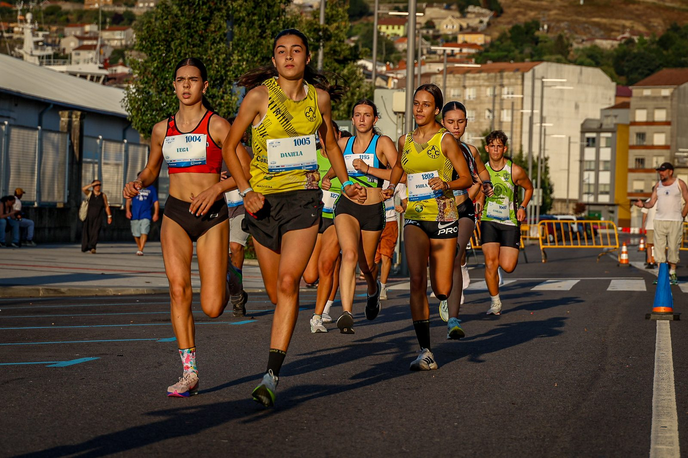
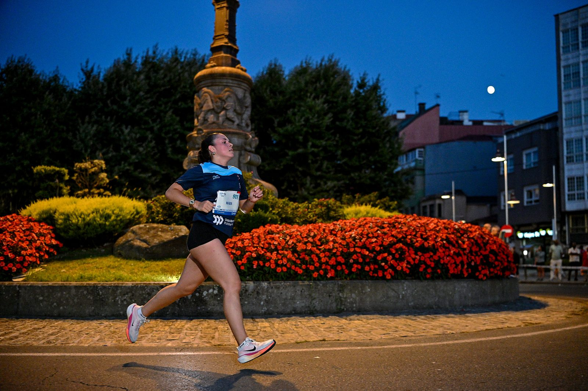

The Manuel Rosales +10 Marín brought a record turnout of more than 1,300 runners to the streets of Marín, Spain, on Friday 25 July 2026, for the 13th edition of the night race organised by the Concello de Marín. Xavi Cabanilles won the men's 10K in 29:47, breaking the course record previously held by David de la Fuente, while Sara Castillo won the women's race in 35:46. Some 587 athletes finished the 10K, the event's headline distance.

Hugo García (29:52) and Denis Incutti (30:00) completed the men's podium behind Cabanilles, a triathlete who trains in the elite group led by Javi Gómez Noya. Alba Raso and gymnast Isa Caeiro finished second and third behind Castillo, a Celta Feminino athlete and past winner of the Medio Maratón de Pontevedra. In the shorter 5,000-metre race, Pontevedra triathlete Candela Sánchez Touza won the women's event in 16:45 and Sergio Quintas took the men's race in 15:19.

The 10K route ran twice around a circuit centred on Avenida de Ourense, taking in the Escola Naval Militar before finishing in front of crowds gathered along the avenue and the Alameda. Cooler-than-usual conditions helped competitors chase fast times, organisers said. Younger age groups also raced across sub-14, sub-16 and sub-18 categories, with wins for Ángel Rodríguez, Carla Suárez, Lucas Costas, Daniela Bayón, Lucas Andrade and Martina López.
Event coverage at the Manuel Rosales +10 Marín was provided by Michael Rosa, Luis Moreira, Vicente Nemi and Leandro Rocha for Image Media.